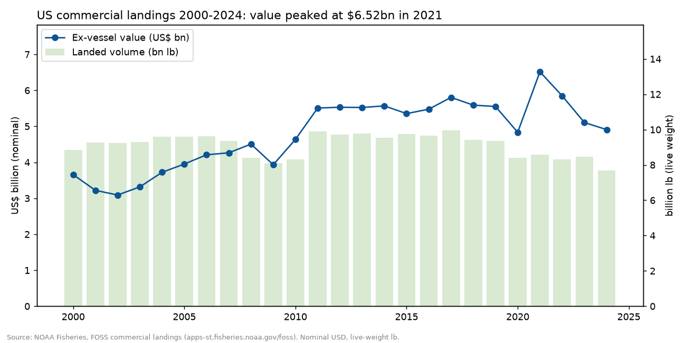
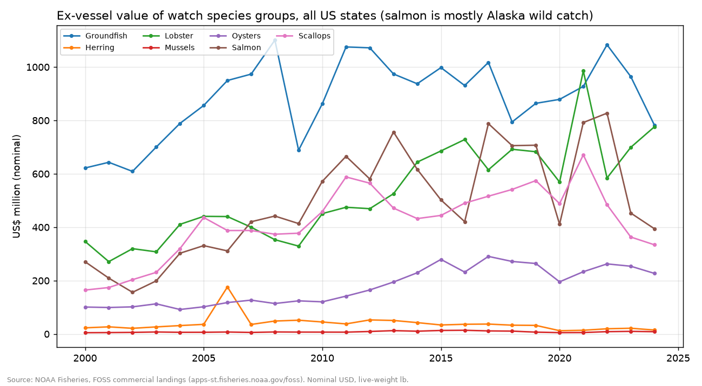
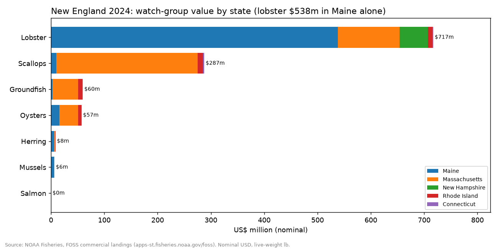
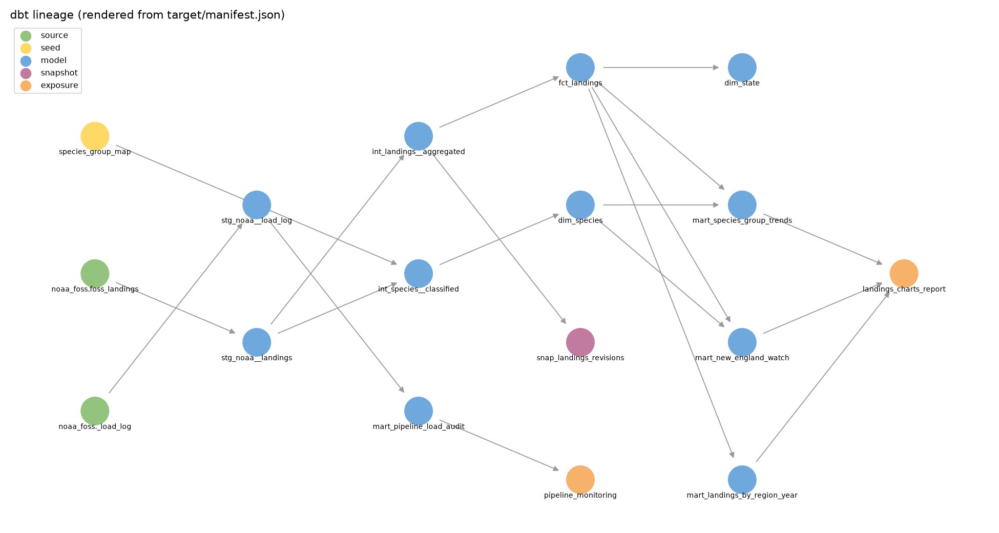

Built from the dbt marts of this project. Source: NOAA Fisheries, FOSS commercial landings (apps-st.fisheries.noaa.gov/foss). Nominal USD, live-weight lb.
| US commercial landings value, 2024 | $4.91bn |
| Landed volume, 2024 | 7.68bn lb |
| Peak value year | 2021 ($6.52bn) |
| Change 2021 to 2024 | -24.7% |
| American lobster value, 2024 | $720m (14.7% of US) |
| New England share of US value, 2024 | 28.4% |




Author: Amir Khan. Personal portfolio project.